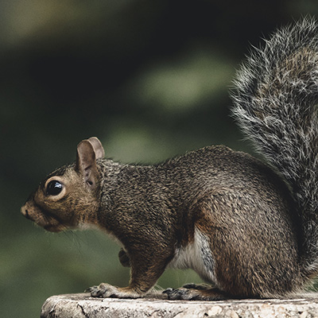
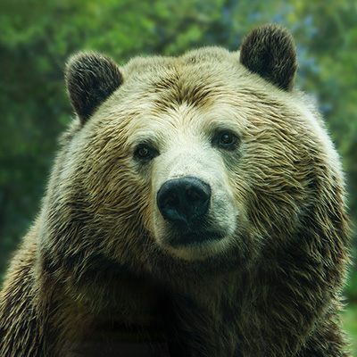

Animais Fantásticos


Raposa
Raposas são pequenos a médios mamíferos onívoros pertencentes a vários gêneros da família Canidae. As raposas têm o crânio achatado, orelhas triangulares verticais, focinho pontiagudo e ligeiramente arrebitado e uma cauda longa e espessa.
Esquilo
Os esquilos pertencem a uma grande família de mamíferos roedores, de pequeno e médio porte, conhecida como Sciuridae. No Brasil, são também conhecidos como serelepe, caxinguelê, caxinxe, quatimirim, quatipuru, agutipuru ou acutipuru. Na Galiza e em algumas zonas de Portugal, também é conhecido por esquio.
Urso
O urso-pardo (Ursus arctos) é um mamífero carnívoro da família dos ursídeos. É o urso de mais ampla distribuição geográfica dentre todos os membros vivos de sua família. É um dos maiores carnívoros terrestres da atualidade, rivalizado em tamanho corporal apenas com seu parente próximo, o urso polar, que é muito menos variável em tamanho e maior devido a isso. Existem varias subespécies reconhecidas, muitas das quais são bem conhecidas em sua área de ocorrência.
Lobo
O lobo é uma espécie de mamífero canídeo do gênero Canis, da família dos cães e raposas. É um sobrevivente da Era do Gelo, originário do Pleistoceno Superior, cerca de 300 mil anos atrás. Está dividido em 4 espécies: lobo-cinzento (Canis lupus), lobo-dourado (Canis anthus), lobo-vermelho (Canis rufus) e lobo-etíope (Canis simensis),[2] embora os cientistas atualmente debatam se o lobo-etíope seria um verdadeiro lobo ou um membro da família dos chacais-dourados. Dessas espécies, o lobo-cinzento é a maior delas e também de todos os membros remanescentes selvagens da família canidae.
babuino
Babuíno (do francês babouin) é a designação genérica para antropoides cercopitecídeos do gênero Papio e afins, caracterizados pelo focinho pontudo, caninos grandes, bochechas volumosas e calosidades nas nádegas. É um animal semi-quadrúpede da ordem dos primatas que mede até 120 centímetros de comprimento. Vive na África e seu habitat natural é nos campos abertos (savana, pastagens ou terrenos rochosos).
Leão
O leão [feminino: leoa] (nome científico: Panthera leo) é uma espécie de mamífero carnívoro do gênero Panthera e da família Felidae. A espécie é atualmente encontrada na África subsaariana e na Ásia, com uma única população remanescente em perigo, no Parque Nacional da Floresta de Gir, Gujarat, Índia. Foi extinto na África do Norte e no Sudoeste Asiático em tempos históricos, e até o Pleistoceno Superior, há cerca de 10 000 anos, era o mais difundido grande mamífero terrestre depois dos humanos, sendo encontrado na maior parte da África, em muito da Eurásia, da Europa Ocidental à Índia, e na América, do Yukon ao México.
FAQ
- Quantos anos vivem os animais?
-
Raposas: Na natureza, a expectativa de vida típica de uma raposa é de um a três anos, embora os indivíduos possam viver até dez anos.
Esquilos: Um esquilo-vermelho pode viver até 3 anos na natureza, e alguns de 7 à 10 anos em cativeiro
Ursos: Os ursos vivem de 20 à 30 anos na natureza.
Lobos: O lobo macho pode viver até os 16 anos e a fêmea até os 14 anos.
Babuino: O babuino pode viver de 35 à 45 anos, na natureza
Leões: o leão pode viver de 8 à 10 anos, enquanto a leoa pode viver de 10 à 15 anos, ambos na natureza.
- Como eles vivem?
-
Raposas: Ao contrário de muitos canídeos, as raposas nem sempre são animais de carga. Normalmente, eles vivem em pequenos grupos familiares, mas alguns (como raposas-do-ártico) são solitários
Esquilos: Os esquilos são roedores que têm a cauda longa e peluda. ... Os esquilos vivem em todos os continentes, exceto na Antártica e na Oceania. Esquilos arborícolas fazem suas casas nas árvores. Esquilos do solo vivem em buracos sob as pradarias, nos desertos e nos campos
Ursos: Os ursos adultos costumam viver sozinhos, exceto durante a época do acasalamento. A fêmea dá à luz de um a quatro filhotes de cada vez. Quando nascem, os filhotes são pequenos, sem pelos e indefesos. Eles mamam por cerca de dois meses, mas ficam junto de suas mães por 18 meses ou mais.
Lobo: O lobo é um animal que vive em grupos, as alcateias. Em ambiente natural, as alcateias são grupos familiares onde ocorre a divisão de tarefas, que são lideradas pelos progenitores. Geralmente, o macho reprodutor é responsável pela busca por alimento, e a fêmea, pelo cuidado com as crias.
Babuino: Eles podem viver em ambientes variados, como florestas, campos e montanhas rochosas. Passam a maior parte do tempo no solo, mas dormem em locais altos, como árvores e penhascos. Babuínos no Parque Nacional das Montanhas Simien, na Etiópia, África.
leões: A maior parte dos leões que hoje vive na natureza são encontrados nas savanas da África e demais regiões semi-desérticas. Ele já foi extinto de muitas áreas de florestas da Ásia e Europa. ... A maior parte do tempo dos leões é destinada ao descanso, apenas durante 5 horas do dia ocorrem as atividades de caça e em grupo
- Eles são Fantásticos?
- Obviamente que sim, cada um deles tem suas proprias caracteristicas que os tornam espetaculares. como o leão usar sua juba como defesa durante uma luta e ser o rei da selva, ou o esquilo armazenar comida nas bochechas, o urso estocar comida para passar o inverno durante a hibernação, os lobos escolherem um lider e serem leais ao seu lider, o babuino ser considerado os reis das montanhas
- como proteger?
- a melhor forma de proteger esses animais é parar de destruir seus habitats, parar de caça-los e deixa-los livres, muitas sub-especies desses animais já foram exterminadas e entraram em extinção por conta dos seres-humanos, que cada vez mais vem destruindo o habitat desses animais e atrapalhando o ciclo da vida, você também pode doar para causas dedicadas a proteger não só esses, como outros animais: petlove.com.br

- 
- 


Números
Contato

- jeffaodossantos0@gmail.com
- +55 (11) 95359-5335
- Poá, SP
- Doe 0 Bitcoin para nos ajudar
- Seg à Sex das 8 às 18